Docs navigation, and the focus check
2026-11-08. Before (eb704be) and after. Two changes: the design-system docs reorganised for navigation only (no component and no prose changed), and the focus halo and sheet bar checked by the build at 320 and at 390 with 200% text, with the three breaks that check found fixed. Record: concept/concept.md → The focus and sheet-bar check in the build, and the docs by navigation.
- A two-level sidebar: Getting started, Foundations, Components under HIG's categories (alphabetical inside), Patterns, Reference.
- One page per real component (47, from 57 entries; ten sit on another component's page), in one order: Example, Usage, Variants, States, Technical details; "On this page" on the right, Previous / Next at the bottom.
- A Components index: a grid of every component, then the grouped list. The family pages redirect to the component a link names.
A component's page
Before: Top bar was one section of the Bars and navigation family page, under a nav by role and family. After: its own page, the sidebar in sections and HIG groups.
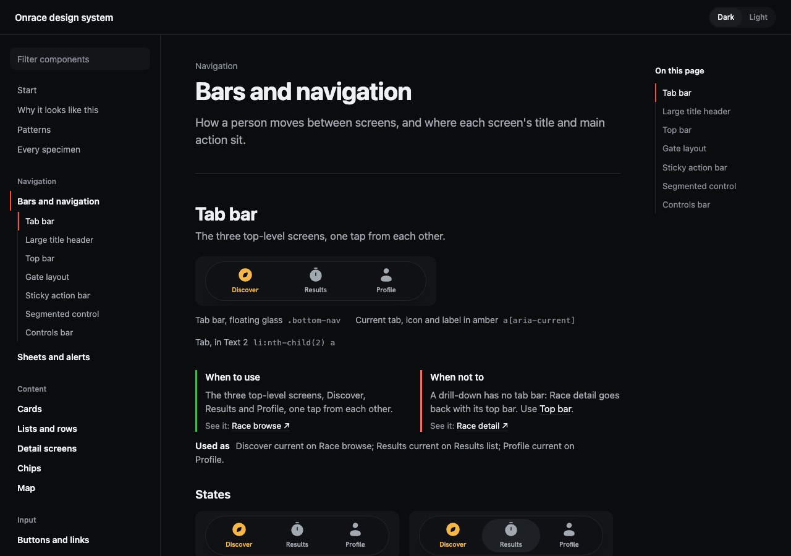
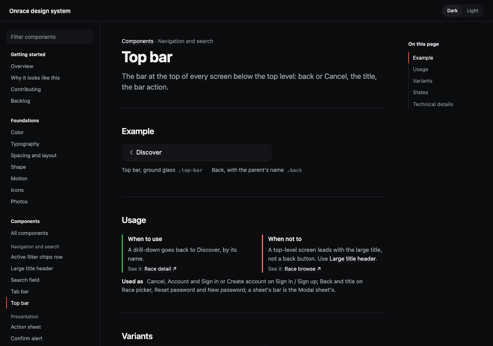
The start page and the Components index
Before: the start page's family cards. After: the Components index, a grid of every component with what it's for and its group, then the list by group.
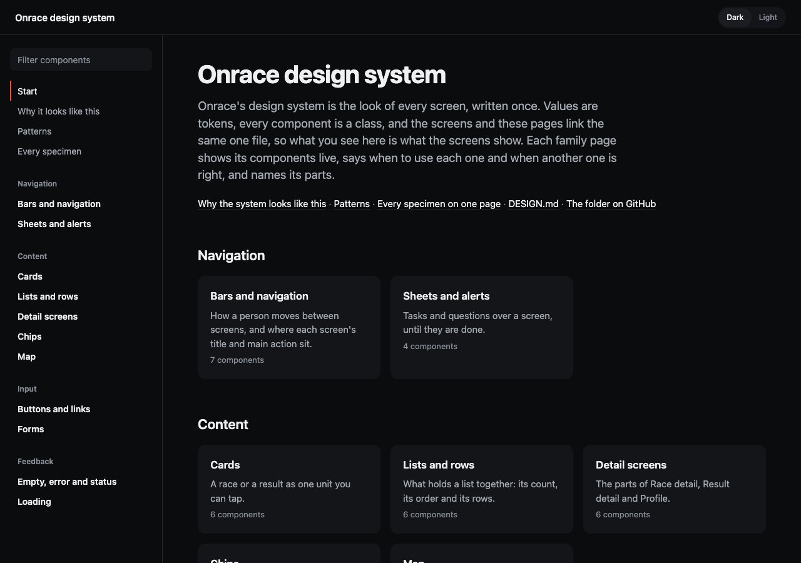
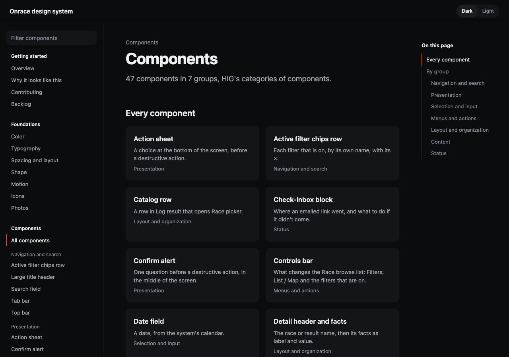
An entry shown on another component's page
Forgot password? link is a text link: it moved from its own section on Buttons and links to Text link's Variants, with its own anchor, its rules, states and technical details. Its old address redirects there.
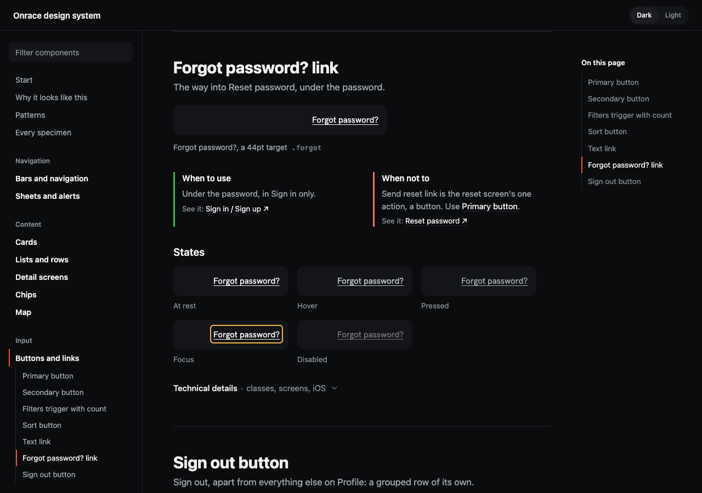
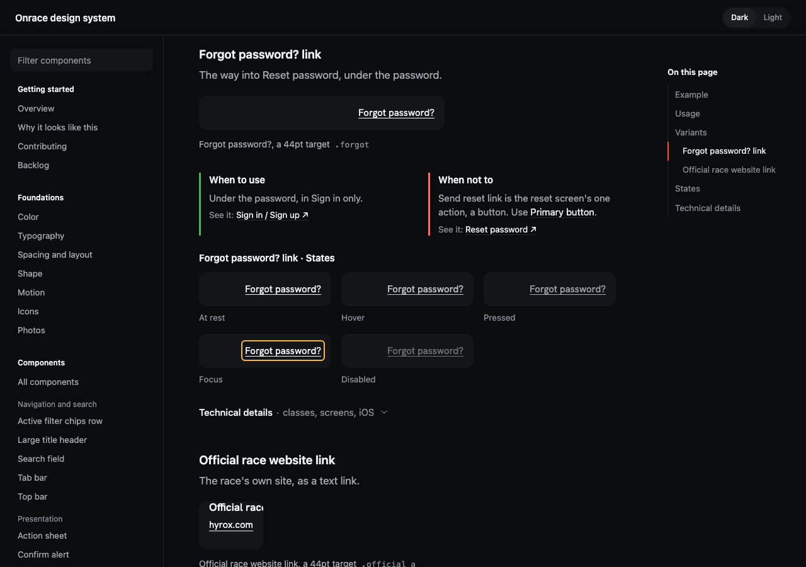
Foundations
Before: the tokens lived in the Lesson 08 overview's reference. After: seven Foundations pages, each the DESIGN.md text and its tokens, drawn by the same renderer.
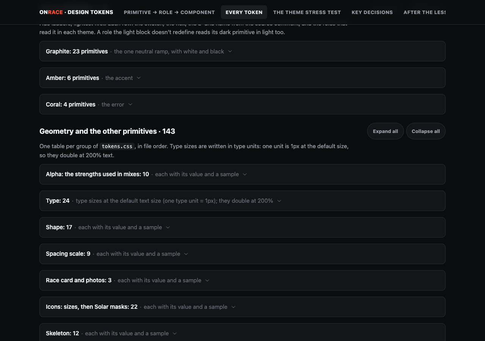
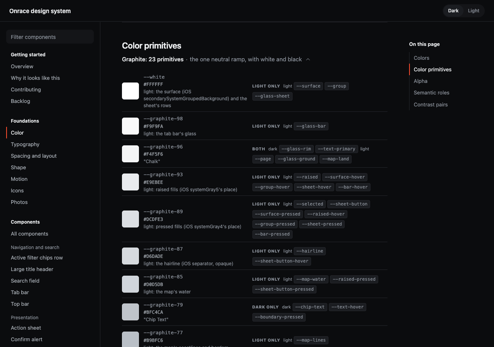
The nav on a phone
The menu open, at 390.
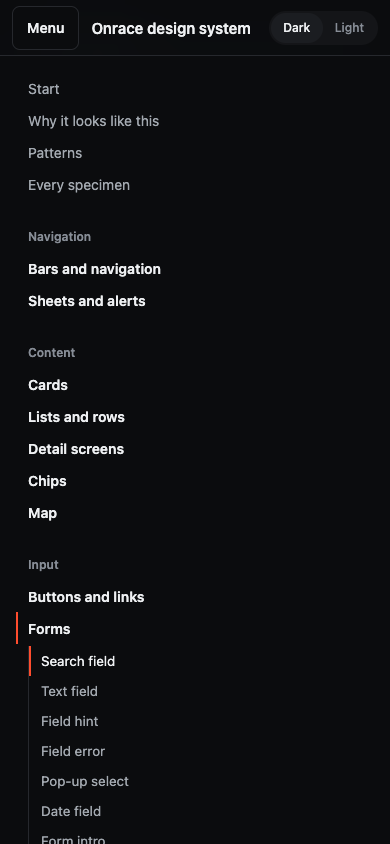
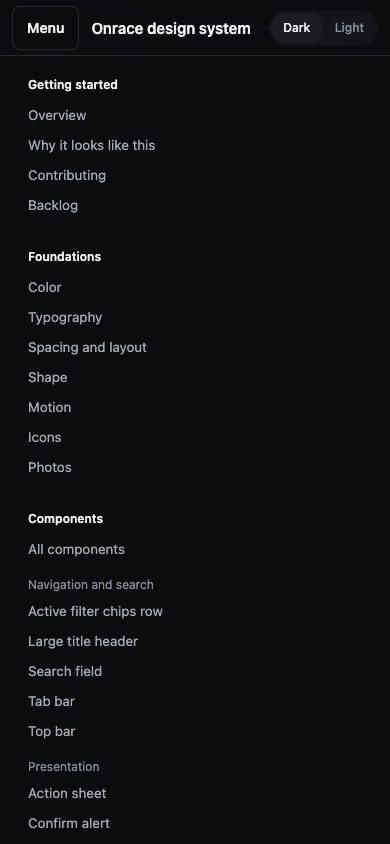
Tab bar at 200% text
Before: a tab ran past the 64px bar and its halo was cut by the screen's bottom edge. After: the labels stop growing at --size-tab-max (13px [?]), and the halo sits inside the bar.
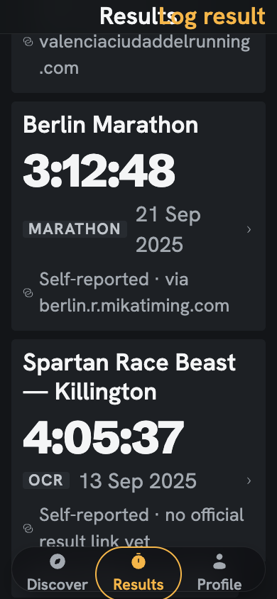
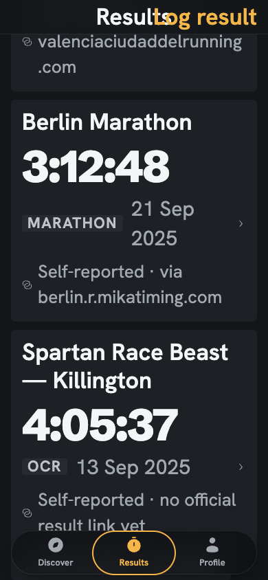
Map pin at 320
Before: Berlin's halo was cut at the frame's right edge: the clip margin was written as a calc(), which Chrome drops. After: --focus-reach, a plain 4px.
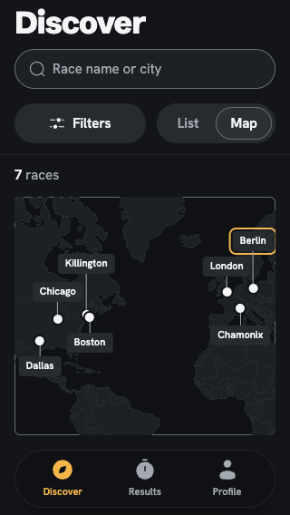
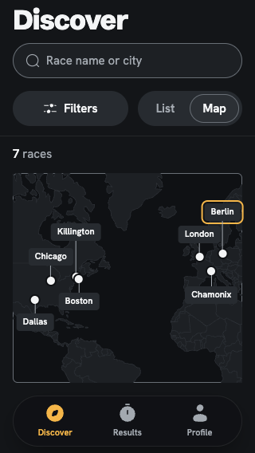
"Change filters" in the empty map, 200% text
Before: focus scrolled the button to the map's bottom edge and its halo was cut. After: it scrolls in with the halo's room.
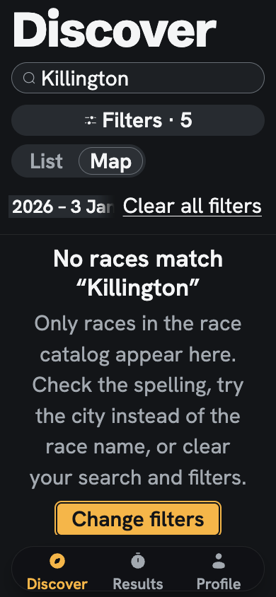
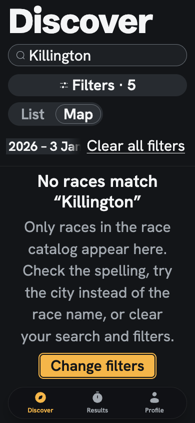